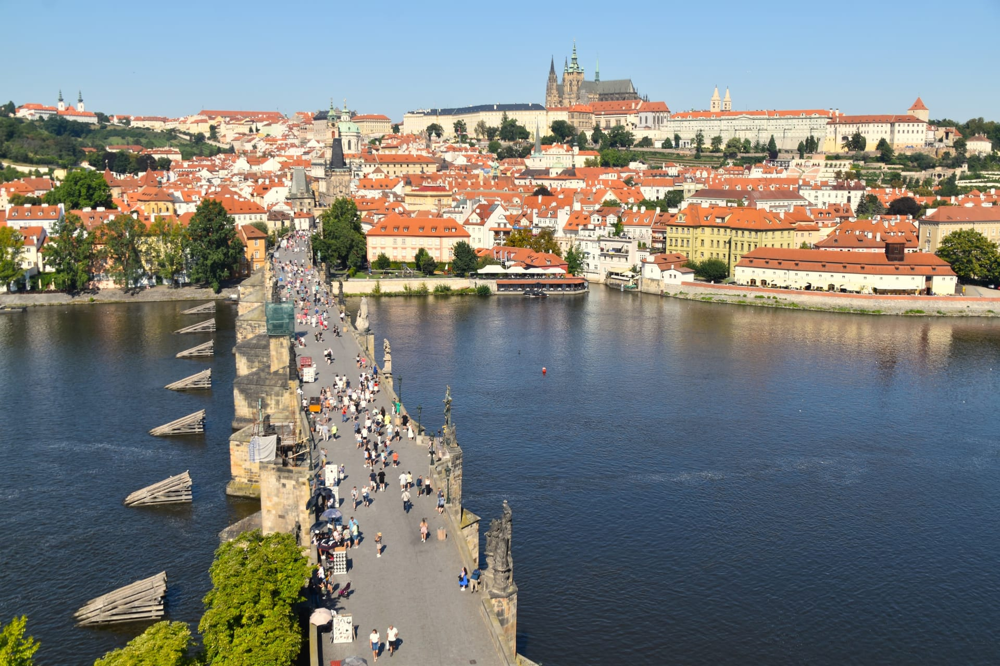

La región de Praga, formalmente conocida como Hlavní město Praha (Ciudad Capital de Praga), es una entidad administrativa única dentro de la República Checa. A diferencia de las otras 13 regiones del país, Praga es tanto una ciudad como una región al mismo tiempo.
El puente de Carlos es el puente más viejo de Praga y atraviesa el río Moldava de la Ciudad Vieja a la Ciudad Pequeña
Praga tiene un estatus especial y se administra a sí misma como una ciudad-región. Esto significa que tiene sus propios órganos de gobierno a nivel municipal y regional.
La Torre de la Pólvora es una de las 13 puertas originales de la Ciudad Vieja de Praga
La región de Praga esta conformada integramente por la cuidad qué a su vez es la ciudad mas grande de Republica Checa y la capital del país. Por su pasado historico Praga cuenta con una rica historia, cultura vibrante y una importancia política y económica significativa.
La casa danzante de Praga
Praga ha sido un centro importante durante siglos, hogar de reyes, emperadores y figuras culturales influyentes. Su centro histórico es Patrimonio de la Humanidad por la UNESCO y alberga innumerables monumentos, museos y galerías.
Torre de comunicaciones de Žižkov
Praga es un importante centro económico y educativo. Alberga importantes universidades, instituciones de investigación y empresas nacionales e internacionales.